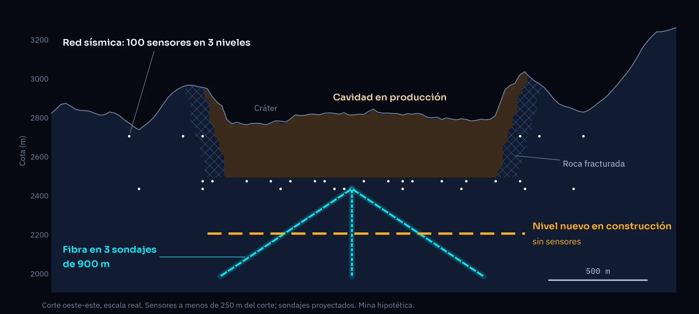
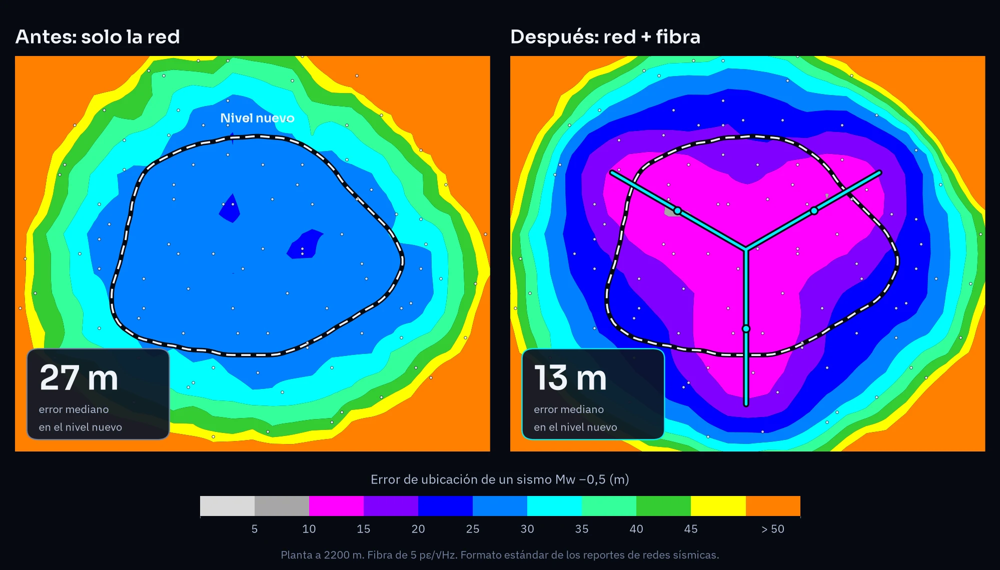
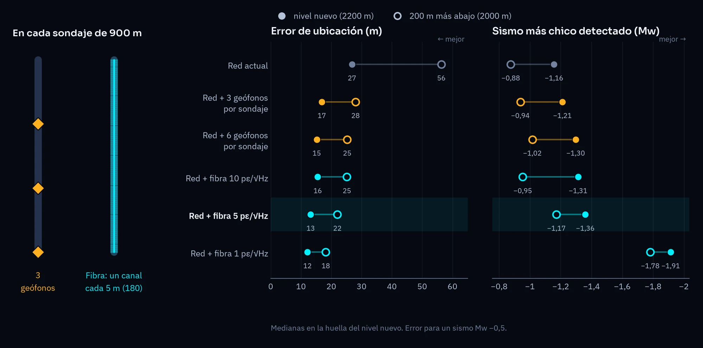
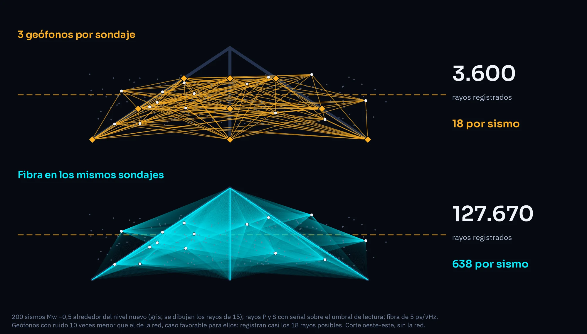
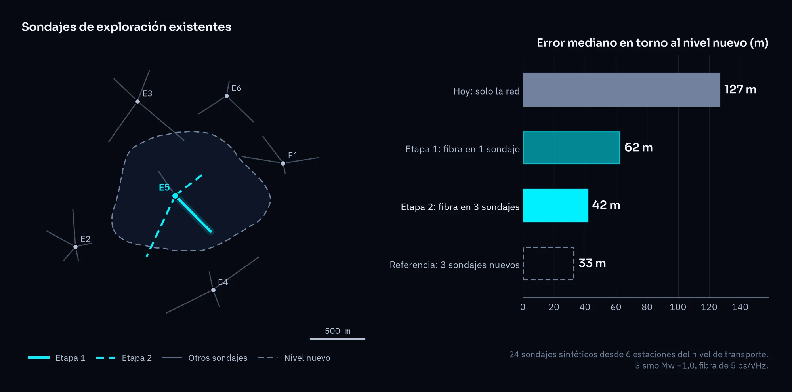
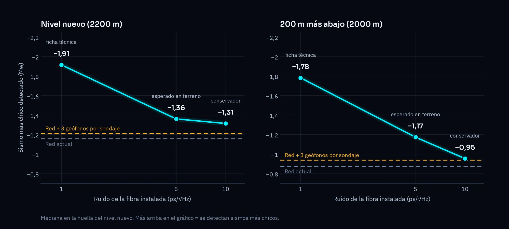

Fibra óptica para monitorear un nivel nuevo antes de excavarlo
Cuando una mina subterránea construye un nivel más profundo, su red sísmica queda arriba y no ve bien lo que pasa abajo. Con fibra óptica cementada en sondajes perforados antes de excavar, el nivel nuevo queda monitoreado desde el primer día. Lo mostramos con un modelo 3D de una mina hipotética de block caving.
Use los botones Antes y Después para comparar la red actual con la red más la fibra. El modelo se gira y se acerca con el mouse o con los dedos. Abrir en pantalla completa
El problema: los sensores llegan después que los túneles
Las redes sísmicas de las minas se instalan en las galerías que ya existen. Cuando se excava un nivel nuevo, la red queda arriba y la zona en construcción queda mal cubierta justo cuando más se necesita.

- Es donde ocurren los estallidos. El desarrollo de túneles profundos en roca de alto esfuerzo concentra los estallidos de roca: en el proyecto Andes Norte de El Teniente se registraron siete durante la construcción de sus túneles de acceso (Rodríguez et al. 2026).
- La red pierde sensibilidad mientras se avanza. En ese mismo proyecto, la magnitud mínima detectada pasó de Mw −2,0 a −0,7 a medida que avanzaban los túneles, y hubo que ir agregando sensores (Rodríguez et al. 2023).
- Las redes se diseñan alrededor de la infraestructura, no del volumen que se quiere monitorear; los sensores en sondajes suelen limitarse a 4–6 por pozo (Furlong y Anderson 2026).
- La autoridad lo pide. Tras el accidente de El Teniente en 2025, Sernageomin (2026) recomendó “reforzar el monitoreo en profundidad, acoplado a sondajes”.
La buena práctica es instalar sensores en sondajes largos antes de excavar (Butler y Simser 2018). La fibra óptica permite hacerlo con cientos de puntos de medición por sondaje y sin electrónica en el fondo.
La mina modelo
Es una mina hipotética de block caving, construida con parámetros publicados; no representa ninguna mina real.
| Elemento | En el modelo |
|---|---|
| Cavidad | Una cavidad en producción desde 2500 m hasta un cráter de subsidencia en superficie |
| Red sísmica | 100 sensores en los niveles de producción (2470 m), transporte (2430 m) y perimetral (2700 m), con la sensibilidad de una red real de la región (Mw −1,1) |
| Nivel nuevo | En construcción a 2200 m, 300 m bajo el actual, sin sensores |
| Piloto de fibra | 3 sondajes de 900 m desde el nivel de transporte, en abanico a 30° bajo la horizontal, con fibra cementada y un solo interrogador |
Qué muestran los mapas
Con la fibra, el error de ubicación en el nivel nuevo baja a la mitad (de 27 a 13 m) y la red detecta sismos más chicos; 200 m más abajo, donde la red ya casi no ubica nada, la fibra deja el error en 22 m.

Los mapas siguen el formato estándar de los reportes de diseño de redes sísmicas de mina (por ejemplo, Zvarivadza et al. 2017):
- Sensibilidad: magnitud del sismo más chico que registran al menos 5 sitios. Más negativo es mejor.
- Precisión: error de ubicación de un sismo Mw −0,5, con errores de lectura de 2 ms (onda P) y 5 ms (onda S) y un 5 % de error en el modelo de velocidades.
Valores medianos bajo la mina:
| Caso | Nivel nuevo (2200 m): sensibilidad | Nivel nuevo: error | 2000 m: sensibilidad | 2000 m: error |
|---|---|---|---|---|
| Red actual | Mw −1,16 | 27 m | Mw −0,88 | 56 m |
| Red + 3 geófonos por sondaje | Mw −1,21 | 17 m | Mw −0,94 | 28 m |
| Red + 6 geófonos por sondaje | Mw −1,30 | 15 m | Mw −1,02 | 25 m |
| Red + fibra, 10 pε/√Hz | Mw −1,31 | 16 m | Mw −0,95 | 25 m |
| Red + fibra, 5 pε/√Hz | Mw −1,36 | 13 m | Mw −1,17 | 22 m |
| Red + fibra, 1 pε/√Hz | Mw −1,91 | 12 m | Mw −1,78 | 18 m |
Una diferencia de 0,2 en magnitud equivale a registrar alrededor de 1,6 veces más sismos. Con el equipo de menor ruido (1 pε/√Hz), la detección mejora en casi 0,8 unidades: unas 6 veces más sismos.
¿Y con geófonos en los mismos sondajes?
En precisión de ubicación, una cadena de geófonos y la fibra rinden parecido en los mismos sondajes. La fibra detecta sismos algo más chicos, y suma ventajas que estos mapas no miden.
Con la práctica típica (3 geófonos por sondaje), la fibra de 5 pε/√Hz tiene 4–6 m menos de error y detecta unas 0,2 unidades de magnitud más abajo. Con 6 geófonos por sondaje, el tope práctico, la diferencia se reduce a 2–3 m. Lo que limita la precisión es el modelo de velocidades, que afecta igual a todos los sensores de un mismo sondaje.

Ventajas de la fibra que no aparecen en los mapas:
- Sin electrónica en el fondo. Si el cable se corta, sigue midiendo hasta el corte; el punto de corte indica dónde se movió la roca.
- Cobertura continua. Mide en todo el largo del sondaje, no en 3 a 6 puntos.
- Deformación lenta. La misma fibra registra cambios de deformación de baja frecuencia, que en minas se han asociado a cambios en el estado de esfuerzos del macizo (Dande et al. 2024).
- Miles de rayos para tomografía, que permiten corregir el modelo de velocidades. Con un modelo mejor, todos los sensores ubican mejor (Furlong y Anderson 2026).

Los geófonos tienen sus propias ventajas: registran las tres componentes del movimiento, necesarias para calcular mecanismos focales, y el software minero ya trabaja con ellos. Por eso proponemos la fibra como complemento de la red, no como reemplazo.
Un piloto por etapas, con sondajes que ya existen
No hace falta perforar sondajes nuevos: con tres sondajes de exploración existentes, bien elegidos, se obtiene cerca del 90 % del beneficio del piloto diseñado.
Las minas suelen tener muchos sondajes de exploración largos que ya no se usan (Butler y Simser 2018; Anderson y Parker 2024). En el modelo simulamos 24 sondajes “heredados”, perforados en abanico desde 6 estaciones de perforación del nivel de transporte, y buscamos la mejor combinación. Error mediano de ubicación en torno al nivel nuevo, para un sismo Mw −1,0:

| Etapa | Qué se instala | Error mediano |
|---|---|---|
| Hoy | Solo la red | 127 m |
| 1 | Fibra en 1 sondaje existente de la mejor estación | 62 m |
| 2 | Fibra en 2 sondajes más de la misma estación (3 en total) | 42 m |
| Referencia | Piloto diseñado: 3 sondajes nuevos de 900 m | 33 m |
- La etapa 1 sirve para medir el ruido real de la fibra en la mina. Es el dato que más condiciona el resultado.
- La etapa 2 agrega ángulos. Con sondajes en direcciones distintas, los sismos se ubican mejor en tres dimensiones.
- Conviene partir de una sola estación de perforación, cerca del centro del nivel nuevo: collares juntos, un solo interrogador y poco cable expuesto en las galerías. Las estaciones del borde rinden bastante menos (64–104 m de error con tres sondajes).
Antes de elegir hay que inspeccionar los sondajes: pueden estar derrumbados, entubados o tapados. En New Afton, con sondajes de 700–870 m, la fibra se instaló por dentro de las barras de perforación y se cementó desde el fondo (Bellefleur et al. 2020).
¿De qué depende?
El factor decisivo es el ruido de la fibra instalada, que depende del equipo (interrogador), del tipo de fibra y de qué tan bien queda cementada.
| Ruido | Qué representa |
|---|---|
| 1 pε/√Hz | Valor de ficha técnica de interrogadores actuales para minería, medido en laboratorio con fibra corta y bien acoplada |
| 5 pε/√Hz | Lo que esperamos en terreno con fibra mejorada bien cementada: nuestro caso principal |
| 10 pε/√Hz | Caso conservador: fibra estándar o acople imperfecto |

La evidencia publicada en minas apunta en la misma dirección:
- Onaping Depth (2490 m de profundidad): una fibra cementada en un sondaje de 200 m registró 107 de 120 sismos cercanos y mejoró la ubicación de la red (Dande et al. 2024).
- Mina a ~1500 m de profundidad: la fibra cementada en sondaje concordó con los geófonos; la fibra amarrada a la malla del túnel tuvo “utilidad muy limitada” (du Toit et al. 2022).
- New Afton: la fibra mejorada da una señal unas 10 veces mayor (+20 dB) que la estándar (Bellefleur et al. 2020).
Por eso el primer paso de un piloto es medir el ruido real en la mina.
Ubicar sismos es solo el primer uso
Una vez cementada, la fibra queda en la roca por años. El mismo cable puede entregar mucho más que la ubicación de sismos, con el mismo interrogador o con otro.
Aviso antes de que llegue la cavidad
En una mina de hundimiento, la fibra de un sondaje al costado de la cavidad registró deformación creciente antes de cortarse, con tiempo para activar protocolos de seguridad (Anderson y Parker 2024). En una mina de hundimiento por subniveles, la deformación medida en sondajes de más de 300 m siguió el avance del techo de la cavidad (John y Hoehn 2024).
Cambios de esfuerzo en el macizo
En Onaping Depth, la señal de baja frecuencia de la fibra subió con fuerza mientras se excavaba una chimenea a través de una zona de falla, y bajó cuando la excavación la atravesó: refleja cómo se acumulan y liberan esfuerzos en la roca (Dande et al. 2024).
Control de tronaduras
En una tronadura de 176 tiros, la fibra instalada en dos sondajes distinguió tiros separados por 25 ms e identificó los que fallaron. Sirve para comparar cada tronadura con su diseño (Anderson y Parker 2024).
Imágenes del macizo
En New Afton y en Kylylahti, la fibra en sondajes subterráneos registró disparos sísmicos con los que se obtuvieron imágenes de fallas, contactos y del cuerpo mineralizado (Bellefleur et al. 2020; Riedel et al. 2018).
Seguir el preacondicionamiento
La fibra en sondajes existentes permitiría mapear las fracturas hidráulicas del preacondicionamiento, como se hace en petróleo y gas (Anderson y Parker 2024; Staněk et al. 2022). En una mina ya se midieron bandas de deformación que coinciden con campañas de preacondicionamiento (John y Hoehn 2024).
Temperatura y agua
Con un interrogador de temperatura, la misma fibra detecta filtraciones, como ya se hace en presas (Anderson y Parker 2024). En una mina, podría avisar del ingreso de agua al sector en producción.
Monitoreo con ruido ambiental
El ruido de equipos y ventilación sirve como fuente para caracterizar la roca alrededor del sondaje, sin disparos (Li et al. 2022, en geotermia). Repetido en el tiempo, podría mostrar cómo se daña la roca antes de que llegue la cavidad. Es la técnica que usamos en volcanes.
Tomografía con los sismos de la mina
Los miles de rayos que registra la fibra permiten corregir el modelo de velocidades, y con un modelo mejor todos los sensores ubican mejor (Furlong y Anderson 2026).
Por eso un sondaje con fibra sirve para varias cosas a la vez. El piloto parte por la ubicación de sismos porque es lo más fácil de comparar con la red que ya existe.
Límites del estudio
Es un modelo conceptual: muestra tendencias y ordena opciones, pero las cifras exactas de una mina real dependen de su geometría, su red y su ruido.
- Mina hipotética. La geometría, la red y los sondajes existentes son sintéticos, construidos con valores publicados.
- Rayos rectos y errores aleatorios, como en los reportes estándar de redes sísmicas. No incluimos errores estructurados del modelo de velocidades (por ejemplo, el borde de una cavidad mal ubicado), donde la densidad de la fibra debería dar una ventaja adicional.
- Detección canal por canal. No modelamos el apilamiento de canales vecinos, que en la práctica mejora la detección con fibra.
- Solo ubicación y detección. No evaluamos magnitudes, mecanismos focales ni la medición de deformación.
- Instalación y costo no están modelados; dependen del estado de los sondajes y de la logística de cada mina.
¿Su mina está desarrollando un nivel nuevo?
Podemos hacer este mismo análisis con la geometría de su mina, su red sísmica y su catastro de sondajes, y diseñar un piloto por etapas.
Co-diseñar un pilotoReferencias
- Anderson, Z. y Parker, R. (2024). Rockmass response monitoring using DFOS. MassMin 2024, Kiruna, pp. 1585–1591.
- Bellefleur, G. et al. (2020). Vertical seismic profiling using distributed acoustic sensing with scatter-enhanced fibre-optic cable at the Cu–Au New Afton porphyry deposit. Geophysical Prospecting, 68, 313–333. doi:10.1111/1365-2478.12828
- Butler, T. y Simser, B. (2018). Early access microseismic monitoring using sensors installed in long boreholes. J. South. Afr. Inst. Min. Metall., 118, 251–257.
- Dande, S. et al. (2024). Utilising distributed acoustic sensing for monitoring rock mass stress conditions in underground mining: a case study. Deep Mining 2024, ACG, Perth. doi:10.36487/ACG_repo/2465_19
- du Toit, H. J., Goldswain, G. y Olivier, G. (2022). Can DAS be used to monitor mining induced seismicity? Int. J. Rock Mech. Min. Sci., 155, 105127. doi:10.1016/j.ijrmms.2022.105127
- Furlong, J. y Anderson, Z. (2026). Velocity model uncertainty in block cave microseismic monitoring: a case for distributed acoustic sensing. Caving 2026, ACG. doi:10.36487/ACG_repo/2645_87
- John, D. y Hoehn, K. (2024). Distributed fibre optic sensing for ground monitoring in underground hard rock mining. Deep Mining 2024, ACG, Perth, pp. 737–746. doi:10.36487/ACG_repo/2425_48
- Li, D., Huang, L., Zheng, Y., Li, Y., Wannamaker, P. y Moore, J. (2022). Feasibility of source-free DAS logging for next-generation borehole imaging. Scientific Reports, 12, 12437. doi:10.1038/s41598-022-16781-6
- Riedel, M. et al. (2018). Underground vertical seismic profiling with conventional and fiber-optic systems for exploration in the Kylylahti polymetallic mine, eastern Finland. Minerals, 8, 538. doi:10.3390/min8110538
- Rodríguez, W., Vallejos, J. A. y Landeros, P. (2023). Seismic rock mass response to tunnel development with destress blasting in high-stress conditions. Rock Mech. Rock Eng., 56, 1621–1643. doi:10.1007/s00603-022-03171-5
- Rodríguez, W., Vallejos, J. A. y Jaque, M. (2026). Methodology for the causal analysis of rockbursts in deep high-stress tunnels. Applied Sciences, 16, 1616. doi:10.3390/app16031616
- Sernageomin (2026). Informe de investigación de accidente fatal, Codelco Chile División El Teniente (accidente del 31 de julio de 2025), mayo 2026.
- Staněk, F., Jin, G. y Simmons, J. (2022). Fracture imaging using DAS-recorded microseismic events. Frontiers in Earth Science, 10, 907749. doi:10.3389/feart.2022.907749
- Zvarivadza, T., Sengani, F. y Adoko, A. C. (2017). In-stope pillar scaling and fracturing in Southern African deep level gold mines. Proc. 26th Int. Symp. on Mine Planning and Equipment Selection (MPES 2017), Luleå University of Technology.